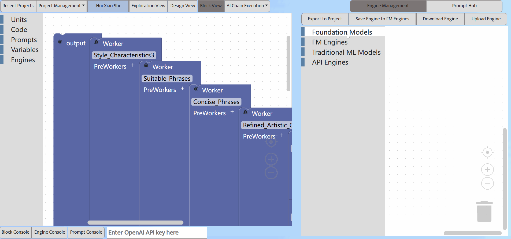

Engine Management
Configure and manage the engines used by workers
Engine management: Block tabs (left), engine block editor (right), FM configuration panel (bottom)
Workers use different types of engines to complete tasks, including foundation models, traditional ML models (upcoming feature), and external APIs. These engines can also be used across AI chain projects, so the AI chain IDE supports separate Engine Management.
Our IDE currently pre-installs three foundation models, including gpt-3.5-turbo, text-davinci-003, and DALL-E, and the Python standard REPL shell.
In the Foundation Engine tab, users can create a foundtion model engine and configure it to use different model parameters, such as temprature, maximum length, Top P, frequency penalty, presence penalty. In this way, users can create different engine instances of the same foundation model. Clicking "Save Engine" in the toolbar will save the created engine in the Foundation Engine tab, which can be edited later or exported to the projects for using.
In the Engines tab of an AI chain project, the user clicks the "Import Engine ..." button, which will open the Engine Management view. The user can then drag the engines that the project will use to the engine editor. Then, clicking the "Export to Project" button will export the selected engines to the project. The user can change the configuration of the engines used in the project in the project's Engine tab, but these changes will not affect the origional engines in the Engine Management.
The user can download the engine information to local files or upload it from local files to the IDE.